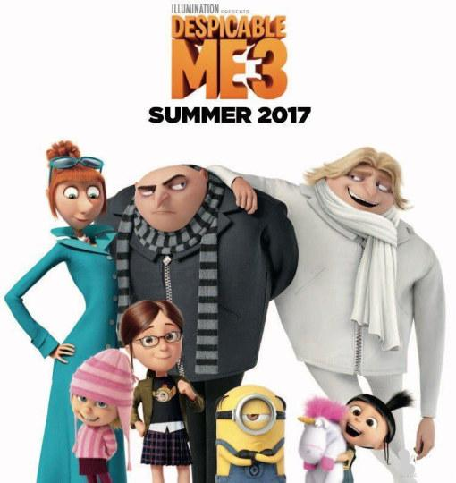

您现在的位置是：首页>博文
格鲁的双胞胎弟弟现身 《神偷奶爸3》新预告公开
发布时间：2017-03-15编辑：张三浏览（430）评论览（65）
大家最喜欢的小黄人又回来了！在昨天（3月14日）公开了格鲁和双胞胎兄弟的照片之后，官方公开了第二款预告。在这版预告当中，神秘的格鲁弟弟也终于现身。

据悉，第三部中这位新反派巴萨扎·布莱德是名一度辉煌过的过气童星。因为青春期时他的电视节目被拿掉，导致他怒火中烧走上坏蛋道路，并从此活在回忆里。此外，片方早前曾透露过本片中还会出现一个格鲁的双胞胎胞弟，他也在最新预告当中出现了。格鲁的弟弟德鲁和格鲁不同，德鲁喜欢穿一身白西装，性格也比较温和，很受大家的喜爱，这让格鲁感到不快。
《神偷奶爸3》将延续前两部的温馨搞笑风格，聚焦格鲁和露西的婚后生活，继续讲述格鲁和三个女儿的爆笑故事。该片配音也最大程度沿用前作阵容，史蒂夫·卡瑞尔继续为男主角格鲁以及他的双胞胎兄弟德鲁配音，导演皮埃尔·柯芬也将继续为所有的小黄人配音，而新角色巴萨扎·布莱德则由《南方公园》主创元老崔·帕克为其配音。
影片将于2017年6月30日在北美上映，中国内地有望引进。
关键字词：小黄人,神偷奶爸3,搞笑,格鲁